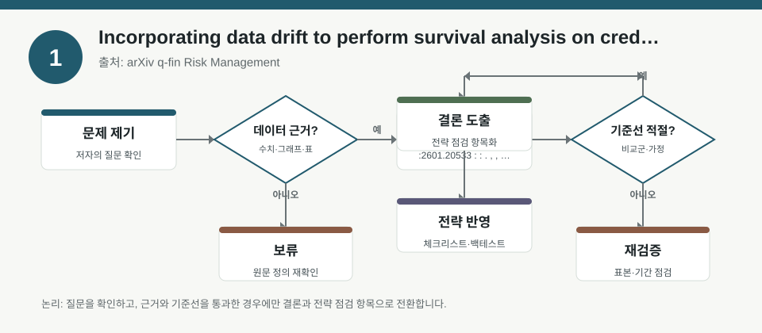
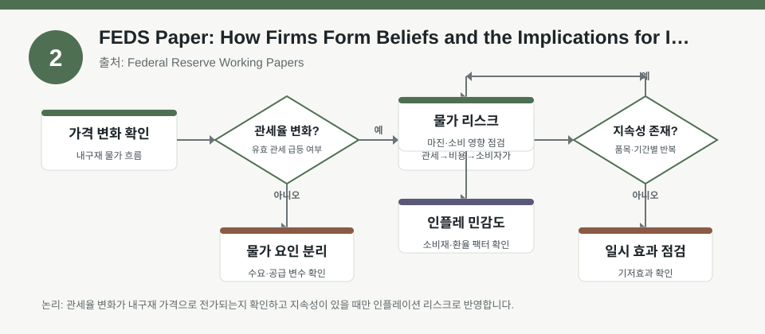
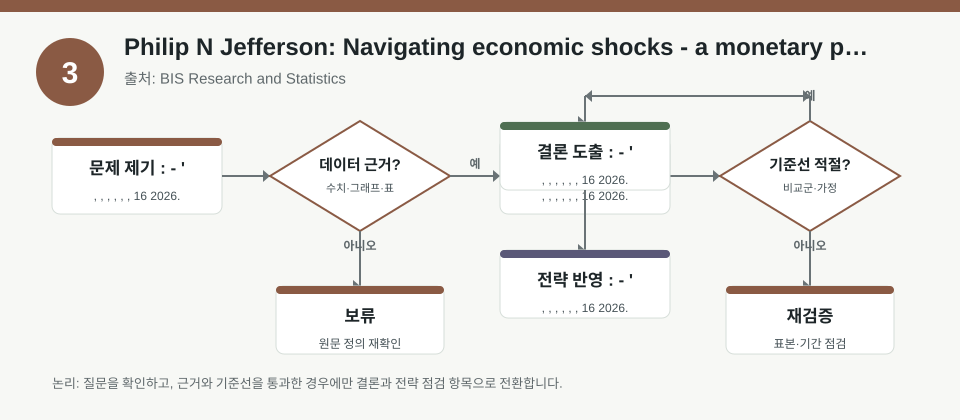

핵심 요약
- 결론: 이번 자료들은 공통적으로 “숫자 자체”보다 가정과 시점 변화에 따른 해석이 중요하다는 점을 보여주며, 한국 투자자는 KOSPI/KOSDAQ의 업종 노출·환율 민감도·금리/인플레이션 민감도를 점검하는 체크리스트로 활용하는 것이 적절합니다.
- 원칙: 각 자료의 정량 수치는 메타데이터에 충분히 제시되지 않았으므로, 본문에서는 사실 단정 대신 “원문에서 확인해야 할 항목”으로 구분해 해석합니다.
주목할 자료
| 번호 | 자료 | 출처 | 원문 | 핵심 내용 | 데이터 포인트 | 리스크/한계 |
|---|---|---|---|---|---|---|
| 1 | Incorporating data drift to perform survival analysis on credit risk | arXiv q-fin Risk Management | 원문 보기 | 신용위험 생존분석에서 비정상성(data drift)을 반영해야 한다는 점을 다룸 | 시간가변 공변량, 드리프트, 부도확률 추정의 안정성 | 포트폴리오별 드리프트 정의와 검증 구간이 메타데이터에 없어 원문 확인 필요 |
| 2 | FEDS Paper: How Firms Form Beliefs and the Implications for Inflation | Federal Reserve Working Papers | 원문 보기 | 기업의 가격설정 기대가 CPI 기대와 다를 수 있고, 비용 충격에 비대칭적으로 반응할 수 있음을 제시 | 마진비용 기대, 인플레이션 기대, 비용 전가의 지연 가능성 | 설문 표본과 식별 전략, 기간별 물가 국면 구분을 원문에서 검수해야 함 |
| 3 | Philip N Jefferson: Navigating economic shocks - a monetary policymaker's perspective | BIS Research and Statistics | 원문 보기 | 통화정책 관점에서 경제 충격 대응과 불확실성 관리의 중요성을 강조한 연설 | 정책 커뮤니케이션, 충격 흡수, 경기·물가·고용 간 균형 | 연설문 성격이므로 계량 추정이나 백테스트 근거로 직접 사용하기는 제한적임 |
자료별 상세
1. Incorporating data drift to perform survival analysis on credit risk

- 핵심: 신용위험 모형은 과거 학습 결과가 미래에도 그대로 유지된다고 가정하면 왜곡될 수 있으며, 데이터 드리프트를 명시적으로 고려해야 한다는 문제의식을 담고 있습니다.
- 데이터 포인트: 시간에 따라 바뀌는 차주의 특성, 경제환경, 관측 방식이 생존분석의 부도위험 추정에 영향을 줄 수 있다는 점이 핵심입니다.
- 리스크: 메타데이터만으로는 드리프트 정의, 검증 샘플, 성능 개선 폭을 확인할 수 없어 원문에서 실험 설정과 비교 기준을 확인해야 합니다.
- 투자전략 반영 예시: KOSDAQ의 중소형 성장주, 레버리지 민감 업종, 금융/신용 스프레드 민감 종목을 볼 때 “과거 정상기”와 “현재 국면”을 분리해 실적·재무지표를 점검하는 체크리스트로 활용할 수 있습니다.
- 실행 예시: 내부 점검표에 “금리 상승기와 하락기, 환율 급변기, 신용스프레드 확대기 각각에서 재무안정성 지표가 어떻게 달라졌는가”를 분리해 기록하고, 같은 지표라도 관측 시점별 분포 변화를 확인합니다.
2. FEDS Paper: How Firms Form Beliefs and the Implications for Inflation

- 핵심: 기업의 물가 관련 판단은 소비자 CPI 기대와 완전히 같지 않을 수 있으며, 특히 자체 비용 전망이 가격결정에 더 직접적으로 연결될 수 있다는 점을 시사합니다.
- 데이터 포인트: 설문 기반 기대 형성, 마진비용 전망, 총수요 충격과 개별 비용 충격의 구분이 인플레이션 해석의 핵심입니다.
- 리스크: 어떤 산업·시기에서 결과가 강했는지, 응답 편향이나 표본 구성 문제가 있는지는 메타데이터만으로 확인되지 않으므로 원문 검증이 필요합니다.
- 투자전략 반영 예시: 한국 투자자는 음식료·화학·유통·제조업처럼 비용 전가와 마진 압박이 중요한 업종에서 원자재, 환율, 인건비, 물류비 변화가 기업 기대에 어떻게 반영되는지 점검하는 항목으로 쓸 수 있습니다.
- 실행 예시: 분기 실적 추정표에 “CPI보다 매입단가·환율·운임이 먼저 움직이는지”, “비용 상승이 매출가격에 시차를 두고 전가되는지”를 따로 기록해 업종별 민감도 차이를 비교합니다.
3. Philip N Jefferson: Navigating economic shocks - a monetary policymaker's perspective

- 핵심: 통화정책 담당자의 관점에서 경제 충격은 단일 지표로 판단하기 어렵고, 물가·성장·고용·금융여건을 함께 보며 불확실성 하에서 정책 커뮤니케이션이 중요하다는 메시지로 읽을 수 있습니다.
- 데이터 포인트: 정책 반응은 경기, 물가, 고용, 금융안정의 동시 고려가 필요하며, 시장은 이를 금리·달러·변동성 경로로 해석할 수 있습니다.
- 리스크: 연설 자료이므로 계량 모델이나 백테스트의 근거로 사용하려면 정책 발언의 맥락과 당시 경제지표를 따로 확인해야 합니다.
- 투자전략 반영 예시: 한국 투자자는 KOSPI 대형주와 KOSDAQ 성장주의 금리 민감도 차이, 원/달러 환율 영향, 이익추정치의 변동성 확대 가능성을 점검하는 정책 이벤트 체크리스트로 활용할 수 있습니다.
- 실행 예시: 금통위·FOMC 전후로 “환율 급등 시 수출주와 내수주의 실적 민감도”, “금리 경로 변화가 밸류에이션과 신용스프레드에 미치는 영향”을 사전 점검 항목에 넣습니다.
팩터·리스크·포트폴리오 관점
- 핵심: 세 자료 모두 공통적으로 팩터 노출은 고정값이 아니라 국면과 데이터 품질에 따라 달라질 수 있으므로, 가치·성장·퀄리티·저변동성 같은 팩터를 해석할 때도 표본 기간과 상태변수를 함께 봐야 합니다.
- 핵심: 포트폴리오 구성에서는 업종 비중뿐 아니라 금리, 환율, 인플레이션, 신용스프레드, 정책 이벤트에 대한 민감도를 분리해 관리하는 것이 해석상 유리합니다.
- 검수: 메타데이터에 성능 지표, 회귀계수, 표본 기간, 드리프트 검정, 정책 이벤트별 반응이 충분히 나오지 않았으므로 원문에서 추정식과 검증 구간을 확인해야 합니다.
정리
- 결론: 이번 자료의 공통 메시지는 “예측모형과 거시해석은 고정된 진리보다 국면별 검증이 우선”이라는 점입니다.
- 다음 확인: 원문에서는 각 연구의 표본, 기간, 식별 전략, 성능 비교, 그리고 한국 투자자 관점에서 참고 가능한 변수 정의를 우선 확인하는 것이 좋습니다.